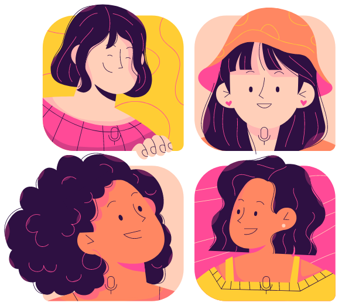

Women of Color (WoC) – particularly Black, Indigenous, and Latine women – are the most underrepresented demographic from high paying industries, including software engineering. Yet WoC are flush with the talent, creativity, and social insight to solve complex problems and lead in the software industry. This program seeks to unite minoritized groups, particularly women of color, trans women, gender queer, and other people of color to reduce isolation and marginalization that are prevalent in educational institutions and industry settings. Using a dedicated Slack space, we foster a peer mentoring network of people to engage, receive feedback, and troubleshoot issues around participation in open source software communities.
We host monthly 1 hour webinars, featuring code-sharing and talks by professionals from academia and the software industry. Go to the WoCCode Webinar Events page for program scheduling and details.
WoCCode is an Astropy sponsored IDE (Inclusion, Diversity, and Empowerment) project, which receives funding support from the Moore Foundation. Questions about the program can be directed to WoCCode at gmail.com
To join WoCCode, fill out this Google form: https://forms.gle/aArR8LdhYYehptr59
WoCCode Slack room
Monthly webinars (alternating between code-sharing and guest speakers)
One-on-one “office hours” available from some mentors
Occasional special topic workshops